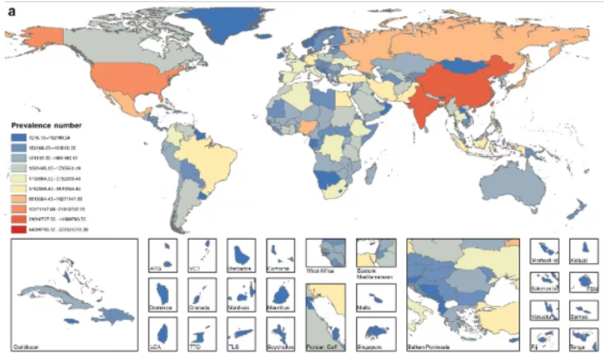

第 6 章 Joinpoint 联结点回归模型
6.1 实战-数据处理
# 读取并查看数据
df <- read.csv("data/Global_HIV.csv",header = T)
colnames(df)
unique(df$measure)
unique(df$location)
unique(df$sex)
unique(df$age)
unique(df$cause)
unique(df$metric)
unique(df$year)# 筛选数据：
number <- df |>
filter(cause%in%c("HIV/AIDS","Syphilis","Chlamydial infection",
"Gonococcal infection","Trichomoniasis",
"Genital herpes")) |>
filter(age=="All ages") |>
filter(metric=="Number") |>
filter(measure=="Incidence") |>
mutate(val=round(val,0), #将数据变为整数
upper=round(upper,0),
lower=round(lower,0)) |>
arrange(cause,sex,year) #重排序，非常重要
ASR <- df |>
filter(cause%in%c("HIV/AIDS","Syphilis","Chlamydial infection",
"Gonococcal infection","Trichomoniasis",
"Genital herpes")) |>
filter(age=="Age-standardized") |>
filter(measure=="Incidence") |>
filter(metric=="Rate") |>
mutate(se=(upper-lower)/(2*1.96)) |> #生成se
arrange(cause,sex,year) #重排序，非常重要# 写出数据
write.csv(number,"data/number.csv",row.names = F)
write.csv(ASR,"data/ASR.csv",row.names = F)